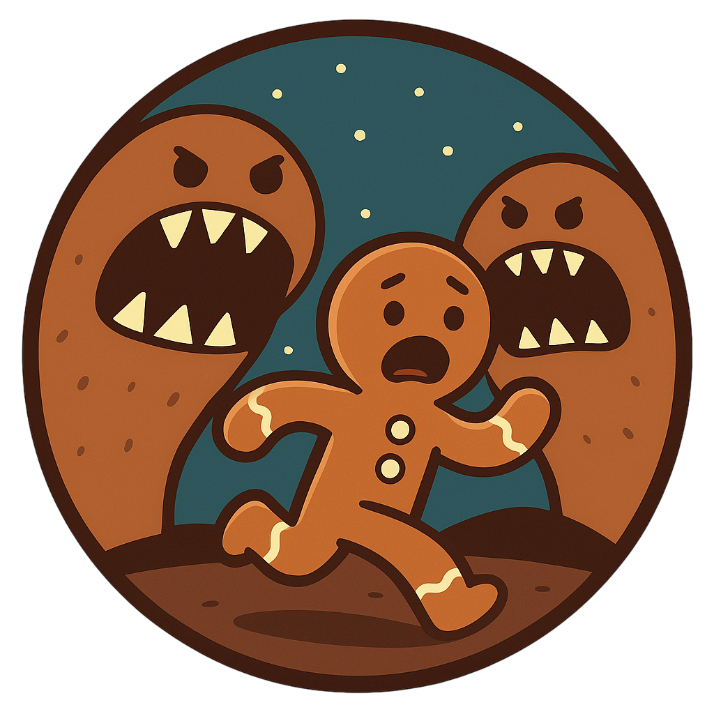
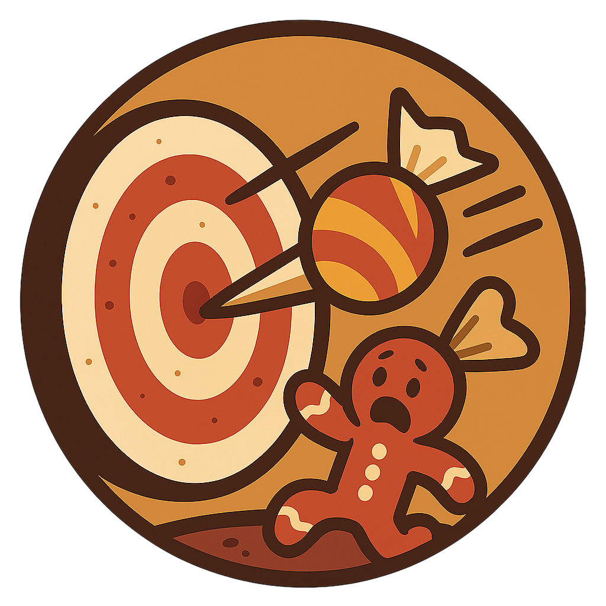
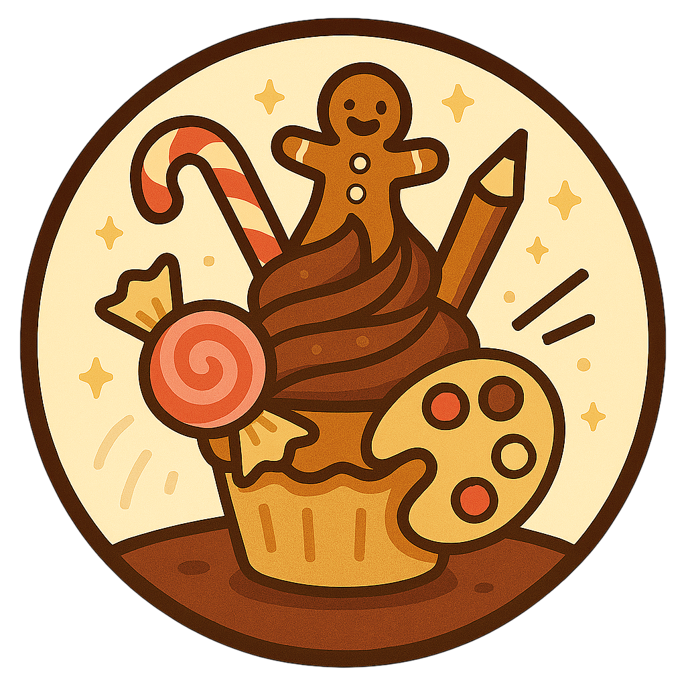

CV de Ti-Biscuit
Contact
-
4 Rue du Four Trop Chaud, Quartier des Contes, Fort Fort Lointain
-
tibiscuit@pain-d-epice.com
-
06 00 COOKIE 00
Objectif professionnel
Survivre plus de 3 jours dans une cuisine active et devenir le premier ambassadeur officiel du Syndicat des Biscuits Comestibles (SBC)
Compétences
Compétences personnelles
- Résistance extrême à la douleur
- Course de sprint
- Courage malgré un gabarit limité
- Créativité débordante pour la résolution de problèmes
Compétences techniques
- Capacité à rester croustillant dans des environnements humides
- Réparation rapide de membres cassés (avec un peu de caramel fondu)
- Capacité à créer 27 expressions faciales différentes uniquement en contractant son glaçage
Expériences
Expériences professionnelles
-
Évadé professionnel de cuisines dangereuses (2001 à aujourd'hui)
Évasion de 12 fours préchauffés, esquive de 48 tentatives de dégustation et survie dans un pot de farine pendant 2 jours (record personnel)
-
Coach personnel en « Croquantise » (1990 - 2001)
Formation de jeunes biscuits en techniques d’esquive
-
Chef Représentant du Syndicat des Pâtisseries Vivantes (fort fort lointain - 1990)
Défense des droits des gâteaux sensibles et obtention d’un décret interdisant de « goûter avant la cuisson »
Etudes / Formations
-
Diplôme en Survie Culinaire
Académie des Douceurs Magiques – Mention : À moitié cuit mais motivé
-
Certificat de Cris Intensifs
École Royale du Cri de Panique – 2 ans d’apprentissage
-
Apprenti chez le Maître Boulanger
Formation écourtée suite à un accident de four (et une tentative de dégustation prématurée)
Centres d'intérêt
-
Fuir les géants affamés
 -
Compétitions de lancer de bonbons
 -
Pâtisserie créative
